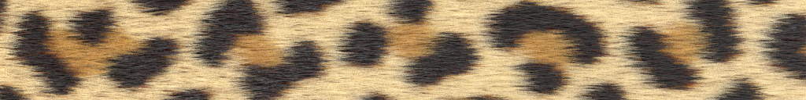

DOI - published in ACM Transactions on Graphics (Proceedings of SIGGRAPH), 2020
Previous research in pattern formation using reaction-diffusion mostly focused on static domains, either for computational simplicity or mathematical tractability. In this work, we have explored the expressiveness of combining simple mechanisms as a possible explanation for pigmentation pattern formation, where tissue growth plays a crucial role.
Our motivation is not only to realistically reproduce natural patterns but also to get insights into the underlying biological processes. Therefore, we present a novel approach to generate realistic animal skin patterns. First, we describe the approximation of tissue growth by a series of discrete matrix expansion operations. Then, we combine it with an adaptation of Turing’s non-linear reaction-diffusion model, which enforces upper and lower bounds to the concentrations of the involved chemical reagents. We also propose the addition of a single-reagent continuous autocatalytic reaction, called reinforcement, to provide a mechanism to maintain an already established pattern during growth.
By careful adjustment of the parameters and the sequencing of operations, we closely match the appearance of a few real species. In particular, we reproduce in detail the distinctive features of the leopard skin, also providing a hypothesis for the simultaneous productions of the most common melanin types, eumelanin and pheomelanin.
Reference implementation (Github)
@article {Malheiros2020,
title = {The leopard never changes its spots: realistic pigmentation pattern formation
by coupling tissue growth with reaction-diffusion},
author = {Malheiros, Marcelo de G. and Fensterseifer, Henrique and Walter, Marcelo},
year = {2020},
issue_date = {July 2020},
publisher = {Association for Computing Machinery},
address = {New York, NY, USA},
volume = {39},
number = {4},
issn = {0730-0301},
url = {https://doi.org/10.1145/3386569.3392478},
doi = {10.1145/3386569.3392478},
journal = {ACM Trans. Graph.},
month = jul,
articleno = {63},
numpages = {13},
keywords = {natural phenomena, texturing, pattern formation, reaction-diffusion, Turing model}
}